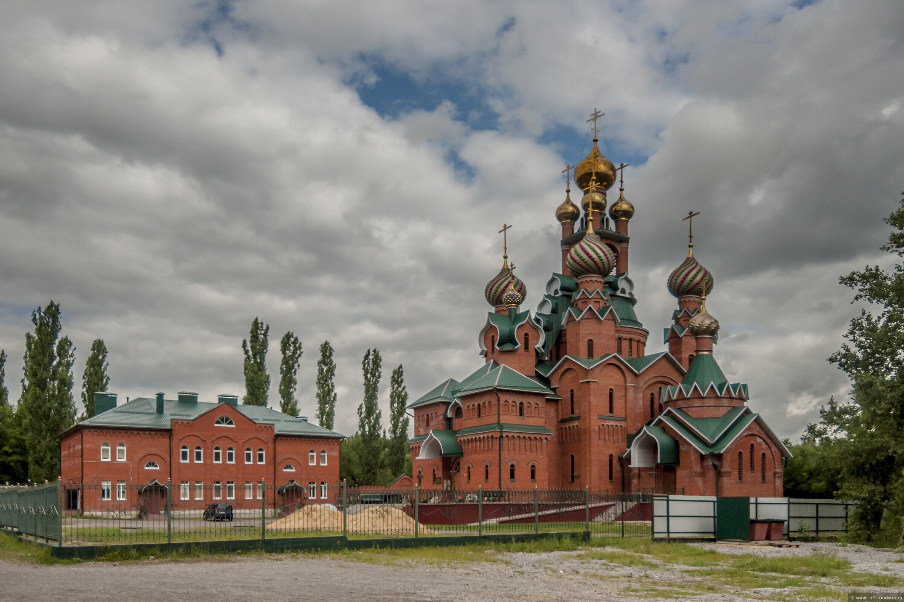
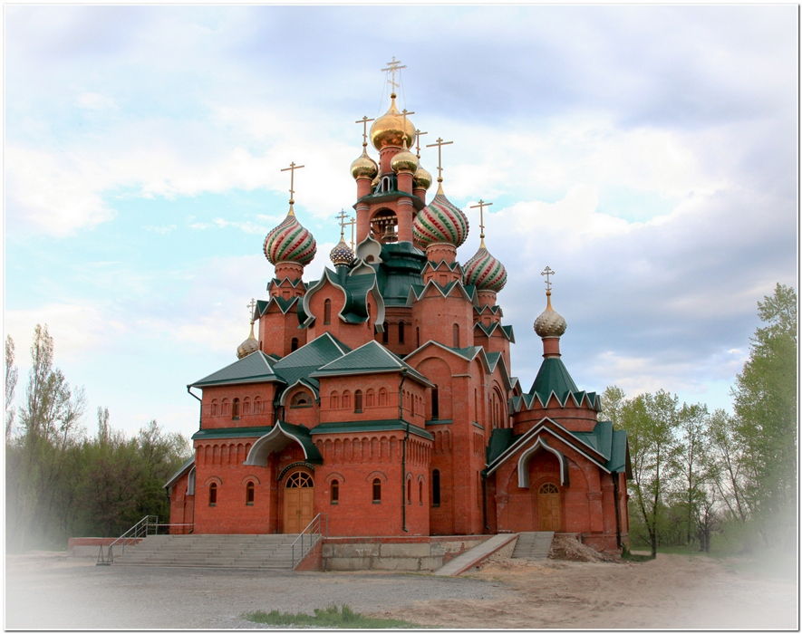
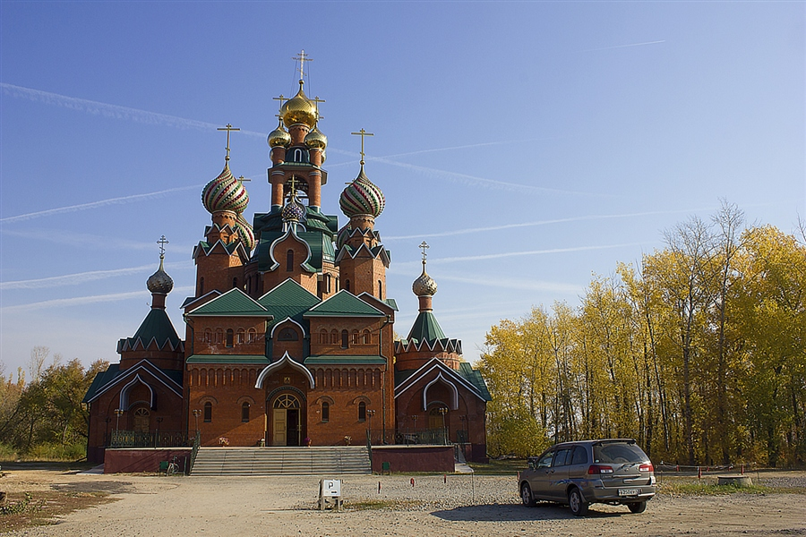
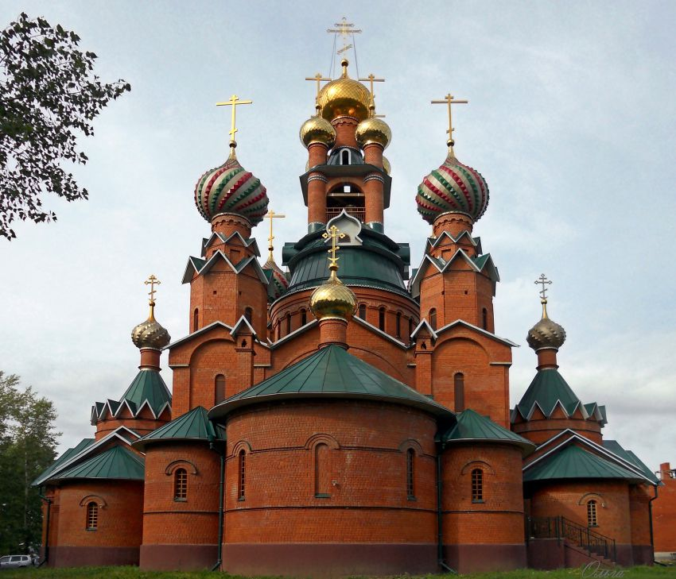
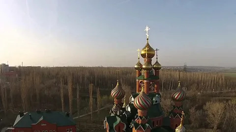
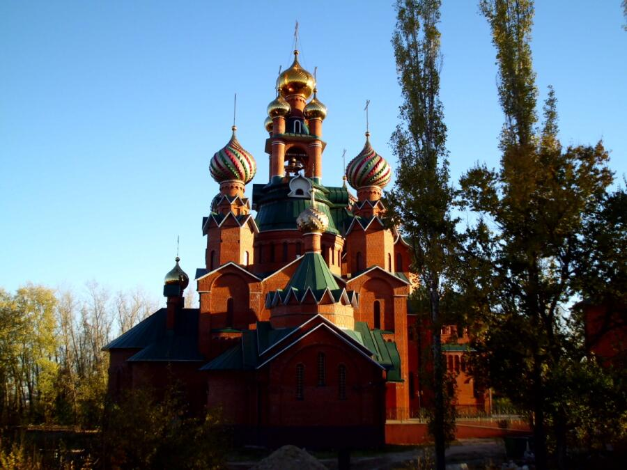
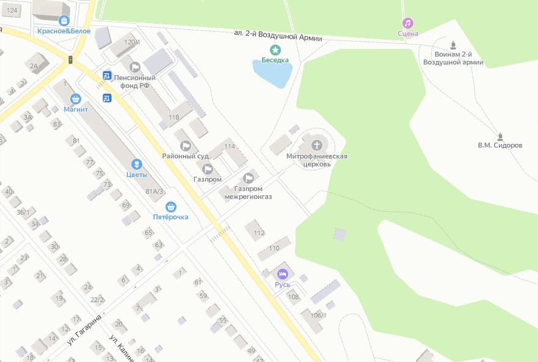

Храм во имя святителя Митрофания епископа Воронежского
../
Телефон: +7 (47372) 2-76-60
E-mail: semilukskoe_blagochinie_vob@mail.ru
Сайт храма
Россия, Воронежская область, город Семилуки, улица 25 лет Октября, дом 112Б

Митрополия: Воронежская
Епархия: Воронежская и Лискинская
Благочиние: Семилукское
Дата основания: 1996-2010
Архитектор: А.Б. Поплавский
Престол: Митрофана Воронежского
Состояние: действующая, новопостроенная
В декабре 1992 года в Семилуках состоялся сход граждан с участием представителей Воронежской Епархии, на котором было принято решение о создании православной общины и строительстве в городе храма во имя святителя Митрофана Воронежского. На первом собрании избрали приходской совет, председателем которого единодушно доверили быть Екатерине Федоровне Пищевой. Не смотря на инвалидность, пожилой возраст и слабое здоровье, она с радостью взвалила на себя весь груз забот, связанный со становлением прихода. Со своими добровольными помощниками - С.С. Буряковой, Н.Е. Елисовой, Н.А. Кирпичевой и другими она начала хлопотать о том, чтобы верующим было предоставлено помещение под молитвенный дом.
Первую Божественную литургию в молитвенном доме совершил протоиерей Владимир Урываев, настоятель храма во имя Архангела Михаила села Девица при большом стечении верующих: храм был переполнен и многим пришлось стоять на улице. На приход указом митрополита Воронежского и Липецкого Мефодия был назначен свой настоятель - отец Федор Бажанов, но вскоре он был переведен в Воронеж, а в Семилуки прибыл молодой священник отец Вадим Чуриков.
Трехпрестольный Митрофановский храм был заложен в 1994 году. Осенью 1995 года, с помощью местных промышленных предприятий был вырыт котлован для закладки основания будущего храма. В 1996 г. началось возведение храма, но из-за недостатка средств работы велись медленно и нередко останавливались.
В 2003 году настоятелем храма был назначен Василий Попов и за последующие 5 лет строительство было практически закончено. 31 октября 2004 года митрополит Воронежский и Борисоглебский Сергий посетил строящийся храм, освятив главку и крест, которые увенчали один из трех приделов строящегося храма. А 6 декабря 2004 года, в день памяти первого епископа Воронежского Митрофания в северном приделе строящегося Свято-Митрофановского храма была совершена первая Божественная Литургия. 15 августа 2007 года митрополит Сергий освятил кресты и центральный купол, а 20 августа, в день 175-летия обретения мощей святителя Митрофана, в храме прошла первая Божественная литургия. В 2009 году проведено отопление, до этого зимой богослужения в храме не велись. 14 апреля 2010 года митрополит Сергий совершил освящение куполов и звонницы для строящегося храма.
Архитектура храма – шатровая эклектика. Автор проекта – архитектор А.Б. Поплавский. Форма основания храма – крест, высота 42 метра.